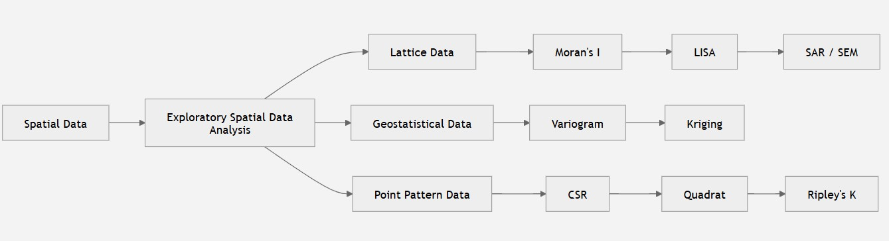
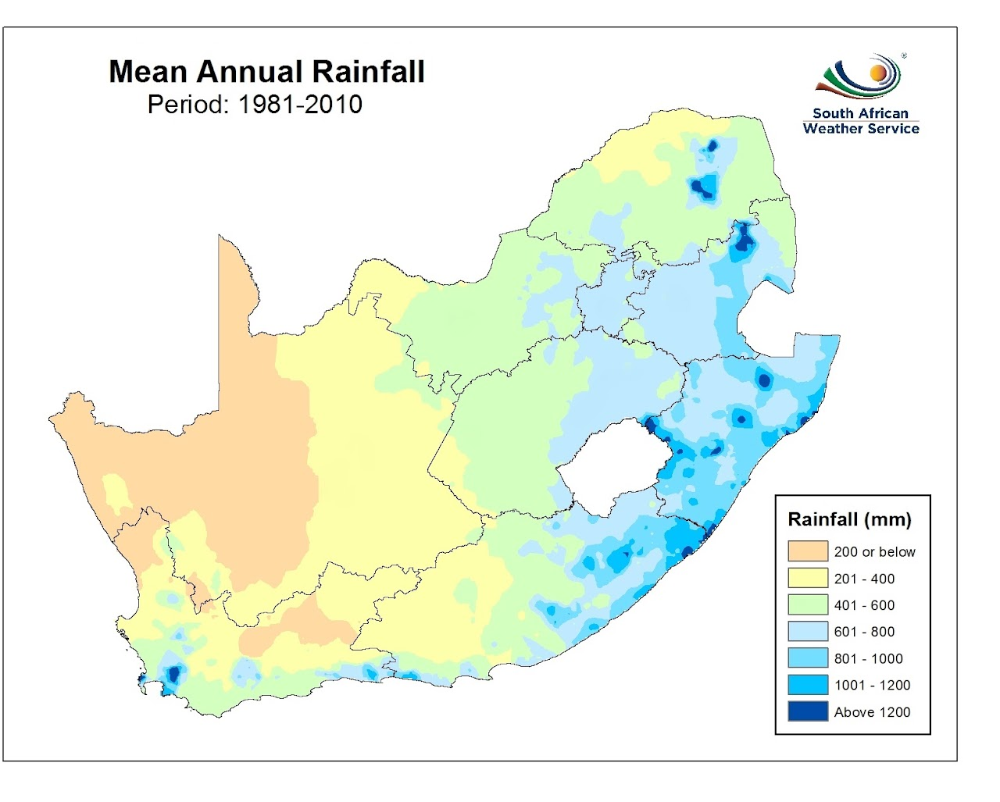
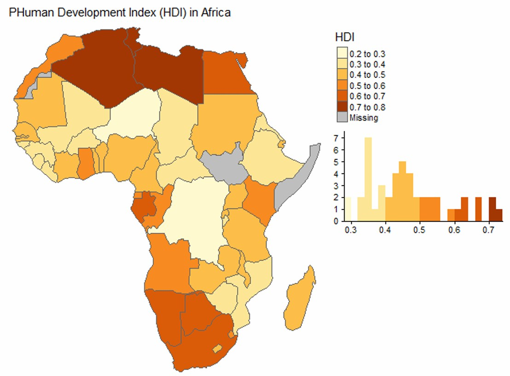
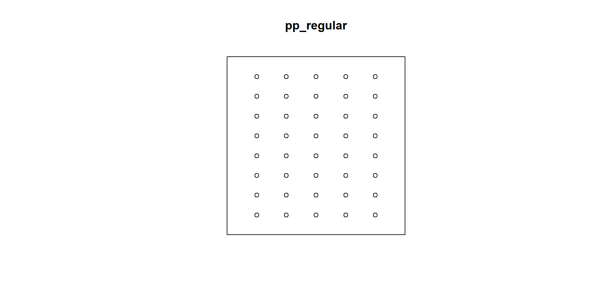
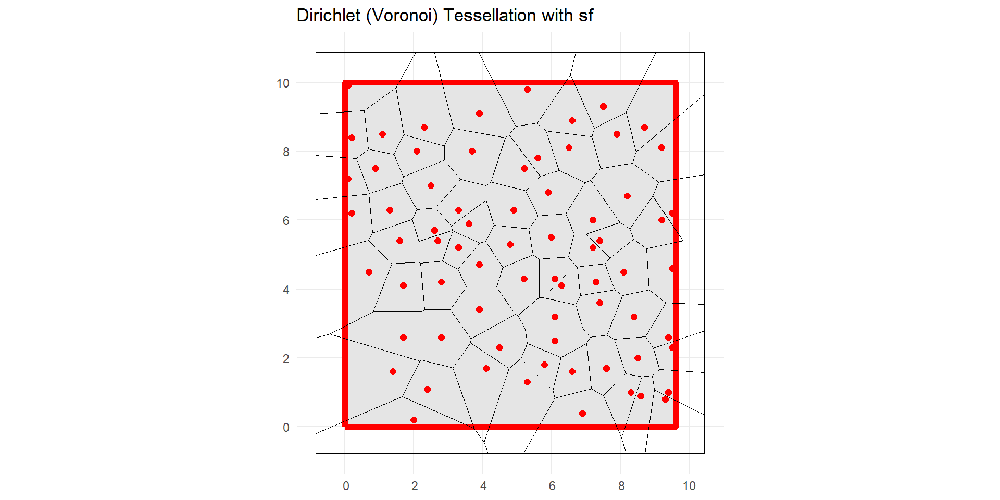
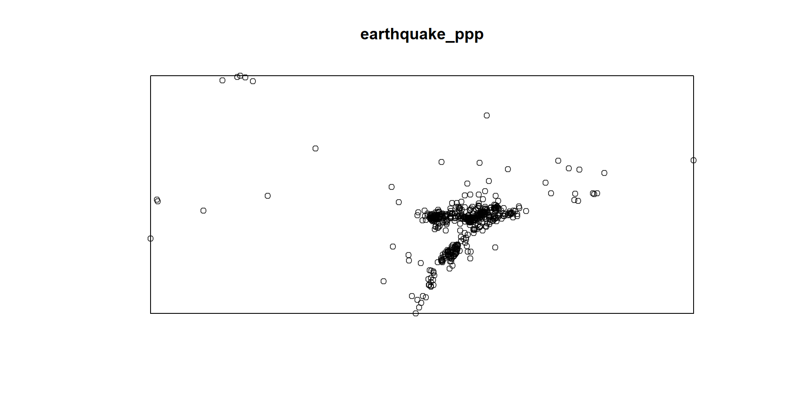
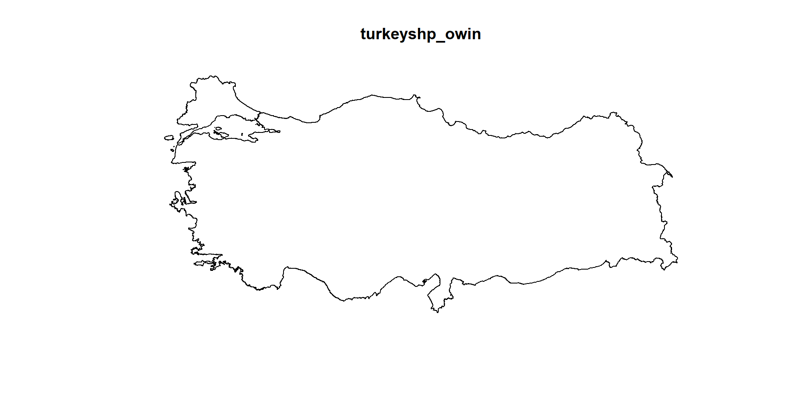
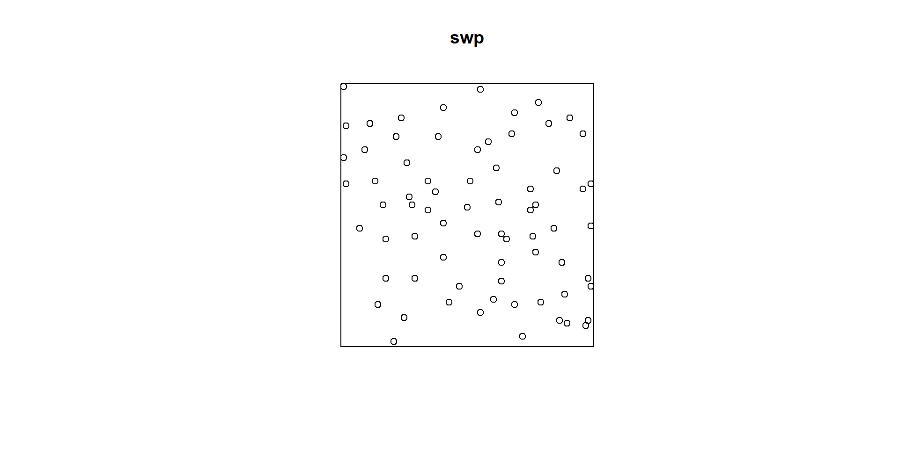
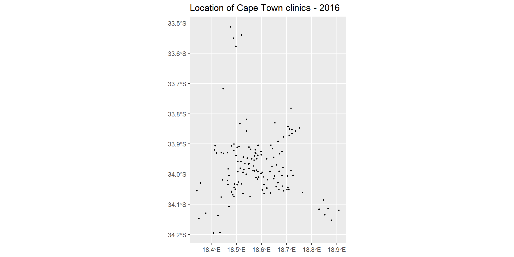
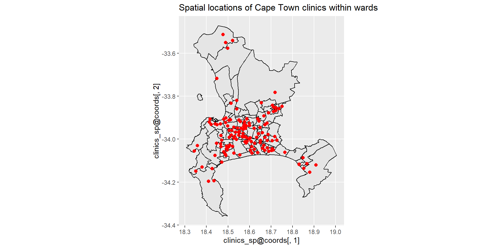

Applied Spatial Data Analysis - Lecture 1: Introduction
Course information
The course introduces you to statistical techniques designed to analyse spatial data where location of observations is important. The course is intended to be practically oriented, with an emphasis on applied learning through worked examples and case studies.
Learning Outcomes
Learning Outcomes
Identify and distinguish key types of spatial data (point patterns, geostatistical, areal/lattice)
Understand spatial dependence and spatial autocorrelation in analysis and modelling of spatial data
Explore spatial patterns using Exploratory Spatial Data Analysis techniques
Select and justify appropriate methods for different spatial problems
Apply spatial methods using R
Interpret and communicate spatial analysis results and insights
Engage critically with spatial statistics literature
Recognise and address common challenges in spatial data analysis
📖 Core Resources
Lecture notes/slides will be primarily based on material presented in the following textbooks:
Main: Cressie, Noel (1991). Statistics for Spatial Data. Wiley.
Anselin, L. (1999). Spatial Econometrics: Methods and Models. Kluwer Academic Publishers.
Arbia, G. (2014). A Primer for Spatial Econometrics: With Applications in R. Palgrave Macmillan UK.
Available through the UCT Library online resources.
Haining, R. (2004). Spatial Data Analysis: Theory and Practice. Cambridge University Press.
Baddeley, A., Rubak, E., & Turner, R. (2016). Spatial Point Patterns: Methodology and Applications with R. Chapman & Hall/CRC.
Wiegand, T., & Moloney, K. A. (2014). Handbook of Spatial Point-Pattern Analysis in Ecology. Chapman & Hall/CRC.
Available through the UCT Library online resources.
Elhorst, P. J. (2014). Spatial Econometrics: From Cross-Sectional Data to Spatial Panels. Springer Berlin.
Gelfand, A. E., Diggle, P., Guttorp, P., Fuentes, M., & Fitzmaurice, G. (2010). Handbook of Spatial Statistics. Chapman & Hall/CRC.
Available through the UCT Library online resources. Part 4 is especially useful for spatial point processes.
Conceptual foundation: Haining (2004) and Anselin (1999)
Spatial econometrics in R: Arbia (2014) and Elhorst (2014)
Point pattern analysis: Baddeley, Rubak, and Turner (2016)
Advanced reference: Gelfand et al. (2010)
Software and practice: GeoDa Center resources
R Packages Connected to the Readings
# Core spatial data handling and mapslibrary(sf)library(terra)library(tmap)library(leaflet)library(dplyr)# Spatial dependence and spatial regressionlibrary(spdep)library(spatialreg)# Spatial point patternslibrary(spatstat.geom)library(spatstat.explore)library(spatstat.model)library(deldir)
Course outline

What is Spatial Data?
Data about the locations and shapes of geographic features and the relationships between them. These are typically stored as coordinates and topology
Coordinates are usually two-dimensional (x,y) but can also be three-dimensional (x,y,z)
A coordinate reference system (CRS) is typically attached to describe which location on Earth the coordinates refer to.
Data can also be:
observational or experimental,
continuous or categorical,
univariate or multivariate
Historical Examples of Spatial Data
One of the first few spatial datasets appeared as maps. Examples:
Bivand et. al (2013): Spatial data analysis is concerned with questions about the hypothetical processes that generate the observed data.
Possible questions that may arise include the following:
Does the spatial patterning of disease incidences give rise to the conclusion that they are clustered, and if so, are the clusters found
Given a number of observed soil samples, which part of a study area is polluted?
Given scattered air quality measurements, how many people are exposed to high levels of black smoke or particulate matter (e.g. PM 10 ), and where do they live?
Do governments tend to compare their policies with those of their neighbours, or do they behave independently?
Methodological Challenges:
Spatial data can be thought of as resulting from observations of a stochastic process (Cressie, 1991):
\[
\left\{ Z(\mathbf{s}) : \mathbf{s} \in D \right\},
\qquad D \subset \mathbb{R}^d.
\]
where the domain \(D\) is a set of \(\mathbb{R}^d\), usually in \(d=2\), and \(Z(s)\) denotes the attribute we observe at \(\mathbf{s}\). Spatial observations violate the foundational i.i.d. assumption of classical statistics due to spatial dependence (\(\text{Cov}(Z(\mathbf{s}_i), Z(\mathbf{s}_j)) \neq 0\)).
Spatial Autocorrelation/Dependence: Near observations are more correlated than distant ones.
Tobler’s first law of geography:
“everything is related to everything else, but near things are more related than distant things” Waldo R. Tobler (Tobler 1970).
Mean Estimation
Consider the following simple statistical model, commonly introduced in beginning statistics courses.
Suppose
\[
Z(1), \ldots, Z(n)
\]
are independent and identically distributed from a Gaussian distribution:
Even after accounting for these variables, neighbouring wards may still have similar unexplained characteristics.
This remaining spatial dependence is captured by
\[
\delta(\mathbf{s}).
\]
Ignoring spatial dependence leads to
underestimated standard errors
misleading significance tests
poor predictions
This motivates the spatial regression models that we will study later:
Spatial Error Model (SEM)
Spatial Lag Model (SAR)
Spatial Durbin Model (SDM)
Why Spatial Statistics?
Ignoring spatial dependence leads to
❌ Underestimated standard errors
❌ Confidence intervals that are too narrow
❌ Inflated Type I error rates
❌ Overconfident statistical inference
Spatial statistics accounts for this dependence, producing more reliable estimates and valid inference.
How do we model spatial data?
The answer depends on how the observations are collected. There are three major types of spatial data and almost every spatial dataset falls into one of the three categories:
Data type
Observed at
Examples
Geostatistical
Continuous locations
Rainfall, air pollution, soil moisture
Lattice (Areal)
Regions or polygons
Census data, municipalities, wards
Point Pattern
Event locations
Crime, crashes, disease cases
ESDA
Every statistical analysis starts with exploring the data. For each type of data, we wish to: Summarise / Visualise the data, evaluate and describe spatial pattern or simulate spatial data: - 1^st order properties (mean, intensity) - 2^nd order properties (covariance/semivariance etc.)
South African Examples
Dataset
Data type
SAWS rainfall stations
Geostatistical
Census 2022 internet access
Lattice
City of Cape Town road crashes
Point pattern
SAPS crime incidents
Point pattern
Municipal unemployment
Lattice
Satellite NDVI
Geostatistical (continuous surface)
Spatial Data Types
Geostatistical Data
Observations at arbitrary locations \(Z(\textbf{s})\), \(\textbf{s} \in D\), where \(D\) is a continous spatial domain meaning observations can occur anywhere. One of the simple examples is rainfall. We can only measure rainfall at specific locations, so measurements are limited but we would like to predict rainfall at unobserved locations. Using spatial interpolation techniques such as Kriging, we can predict the rainfall at unobserved locations.

Geostatistical Data: Why interpolation?
Objective is to create a smoothed surface Assumptions: Surface is continuous and Spatial dependence Too expensive to sample exhaustively Physically impossible to get to locations Inaccessible locations e.t.c.
Areal (Lattice) Data
In areal or lattice data, the domain is a fixed countable A. Observations are associated with regions:
\[
Z(A_i), i=1,\ldots,n
\]
Observations are made over the fixed set of spatial units (regular or irregular polygons)
Data are typically aggregated at area level (e.g. districts, census tracts, grid cells)
Units are non-overlapping
Common in spatial epidemiology: cases aggregated by administrative area
Useful for analysing spatial patterns and identifying geographic risk factors
Spatial relationships (e.g. adjacency, neighborhood structure) are crucial
Also arise in remote sensing where measurements are made on regular grids (e.g. satellite-derived temperature or vegetation indices)
Examples: - Number of deaths due to Septicaemia in the municipalities of South Africa - Presence or absence of an invasive plant species in square quadrats over a study area - Pixel values from remote sensing

Point Pattern Data
In point patterns, the domain is random \(D\).
Its index set gives the locations of random events of the spatial point pattern, and \(Z(s)\) may be equal to \(1 s ∈ D\) indicating occurrence of the event, or random, giving some additional information.
Point patterns arise when the variable to be analysed corresponds to the location of events
The main interest is in the locations (points) of all occurrences of some event:
Earthquake epicentres
Location of road accidents
Locations of longleaf pines
The points may also be “marked” (e.g. magnitude of earthquakes as a marker of size)
The question of interest is whether the points exhibits complete spatial randomness, clustering, or regularity
Comparison
Feature
Geostatistical
Lattice
Point Pattern
Observation
Measurement
Region
Event
Location fixed?
Yes
Yes
Random
Goal
Prediction
Explain variation
Model occurrence
Example
Rainfall
Census
Crashes
Which Statistical Models?
Data type
Typical methods
Geostatistical
Variograms, Kriging, Gaussian Processes
Lattice
Moran’s I, LISA, SAR, SEM
Point Pattern
Quadrat analysis, K-function, Kernel Density
Throughout this course we will study all three.
Spatial Data Issues to Watch For
Modifiable Areal Unit Problem (MAUP): Sensitivity of results to zonal aggregation.
Ecological Fallacy: Inappropriate inference about individuals from aggregated spatial data.
Spatial Scale Dependency: Results vary depending on the chosen geographic resolution.
Boundary & Edge Effects: Distortions arising at the margins of observation window \(D\).
The Modifiable Areal Unit Problem (MAUP)
Two Components of MAUP
Scale Effect: Statistical results change as data are aggregated to larger spatial units.
Zone Effect: Statistical results change when the shape or orientation of spatial units is altered.
Analytical Impact
MAUP directly influences:
Data aggregation
Correlation coefficients
Variance
Spatial autocorrelation
Statistical inference
1. Scale Effect (Aggregation)
As point or grid data are aggregated into progressively larger spatial units, the sample variance decreases, while the overall mean remains unchanged.
collection of different geometry types: st_geometrycollection()
sfg
A single point and multipoint
# Using the sf library for simple features# Tarih Saat Enlem(N) Boylam(E) Derinlik(km) MD ML Mw Yer Çözüm Niteliği# ---------- -------- -------- ------- ---------- ------------ -------------- --------------# 2023.02.15 14:46:46 36.8803 36.6177 8.3 -.- 2.8 -.- ASAGIBILENLER-ISLAHIYE (GAZIANTEP) # 2023.02.15 14:43:05 37.0218 28.8915 8.4 -.- 2.7 -.- OTMANLAR-KOYCEGIZ (MUGLA)# sf::st_crs(4326), which means x and y positions are interpreted as longitude (E) and latitude (N), respectively, in the World Geodetic System 1984 (WGS84)point1_sg =c(36.6177, 36.8803) |>st_point() # this will create a "sfg" class Geometryplot(point1_sg)
# multipolygonpolygons <-list(poly1, poly2)polygons_sg <- polygons |>st_multipolygon()st_crs(polygons_sg) # we see that the sf geometry has no CRS set up.
Coordinate Reference System: NA
sfc
We usually work with multiple simple features and want to combine them. We have a multipolygon and points and want to combine these. We will use st_sfc() to merge
points_sfc <-st_sfc(point1_sg, point2_sg) # with no CRSst_crs(points_sfc)
Coordinate Reference System: NA
points_sfc <-st_sfc(point1_sg, point2_sg, crs =4326) # with appropriate CRSst_crs(points_sfc)
Coordinate Reference System:
User input: EPSG:4326
wkt:
GEOGCRS["WGS 84",
ENSEMBLE["World Geodetic System 1984 ensemble",
MEMBER["World Geodetic System 1984 (Transit)"],
MEMBER["World Geodetic System 1984 (G730)"],
MEMBER["World Geodetic System 1984 (G873)"],
MEMBER["World Geodetic System 1984 (G1150)"],
MEMBER["World Geodetic System 1984 (G1674)"],
MEMBER["World Geodetic System 1984 (G1762)"],
MEMBER["World Geodetic System 1984 (G2139)"],
MEMBER["World Geodetic System 1984 (G2296)"],
ELLIPSOID["WGS 84",6378137,298.257223563,
LENGTHUNIT["metre",1]],
ENSEMBLEACCURACY[2.0]],
PRIMEM["Greenwich",0,
ANGLEUNIT["degree",0.0174532925199433]],
CS[ellipsoidal,2],
AXIS["geodetic latitude (Lat)",north,
ORDER[1],
ANGLEUNIT["degree",0.0174532925199433]],
AXIS["geodetic longitude (Lon)",east,
ORDER[2],
ANGLEUNIT["degree",0.0174532925199433]],
USAGE[
SCOPE["Horizontal component of 3D system."],
AREA["World."],
BBOX[-90,-180,90,180]],
ID["EPSG",4326]]
Coordinate Reference System:
User input: EPSG:4326
wkt:
GEOGCRS["WGS 84",
ENSEMBLE["World Geodetic System 1984 ensemble",
MEMBER["World Geodetic System 1984 (Transit)"],
MEMBER["World Geodetic System 1984 (G730)"],
MEMBER["World Geodetic System 1984 (G873)"],
MEMBER["World Geodetic System 1984 (G1150)"],
MEMBER["World Geodetic System 1984 (G1674)"],
MEMBER["World Geodetic System 1984 (G1762)"],
MEMBER["World Geodetic System 1984 (G2139)"],
MEMBER["World Geodetic System 1984 (G2296)"],
ELLIPSOID["WGS 84",6378137,298.257223563,
LENGTHUNIT["metre",1]],
ENSEMBLEACCURACY[2.0]],
PRIMEM["Greenwich",0,
ANGLEUNIT["degree",0.0174532925199433]],
CS[ellipsoidal,2],
AXIS["geodetic latitude (Lat)",north,
ORDER[1],
ANGLEUNIT["degree",0.0174532925199433]],
AXIS["geodetic longitude (Lon)",east,
ORDER[2],
ANGLEUNIT["degree",0.0174532925199433]],
USAGE[
SCOPE["Horizontal component of 3D system."],
AREA["World."],
BBOX[-90,-180,90,180]],
ID["EPSG",4326]]
sf
We usually have a data frame that stores the attributes of points, polygons, lines. Remember the earthquake magnitude, time, depth for the points; elevation, population, size for the polygons.
earthquake_sf <- earthquake_csv |>st_as_sf(coords =c("Long", "Lat"), crs =4326) |># convert to sf file |>#Here Long comes first.st_transform("+proj=utm +zone=37 +datum=WGS84 +units=m +no_defs") # this could be a different CRSst_crs(earthquake_sf)
set.seed(135)xy_csr <-matrix(runif(2000), ncol=2)mark_numerical =rexp(1000)mark_categorical =sample(0:1,size=1000,replace=TRUE)# plot without markspp_csr_m <-as.ppp(xy_csr, c(0,1,0,1))plot(pp_csr_m)
# plot with marksxy_csr_withmark =as.data.frame(cbind(xy_csr,mark_numerical, mark_categorical))# The categorical variable needs to be set as factor with clearly defined levelsxy_csr_withmark$mark_categorical =factor(xy_csr_withmark$mark_categorical, levels =c("0","1"))# set as point patternpp_csr_withmark =with(xy_csr_withmark, ppp(V1,V2,c(0,1),c(0,1),marks=xy_csr_withmark[,4]))plot(pp_csr_withmark)
Regular Data Points
regular <-read.csv("C:/Users/01438475/OneDrive - University of Cape Town/ASDA/regular.csv")xy_regular <-matrix(cbind(regular$X,regular$Y), ncol=2)pp_regular <-as.ppp(xy_regular, c(0,1,0,1))plot(pp_regular)

Cluster Data Points
cluster <-read.csv("C:/Users/01438475/OneDrive - University of Cape Town/ASDA/cluster.csv")xy_cluster <-matrix(cbind(cluster$X,cluster$Y), ncol=2)pp_cluster <-as.ppp(xy_cluster, c(0,1,0,1))plot(pp_cluster)
Planar point pattern: 71 points
window: rectangle = [0, 9.6] x [0, 10] metres
class(swp)
[1] "ppp"
summary(swp)
Planar point pattern: 71 points
Average intensity 0.7395833 points per square metre
Coordinates are given to 16 decimal places
Window: rectangle = [0, 9.6] x [0, 10] metres
Window area = 96 square metres
Unit of length: 1 metre
plot(swp)
Tesselation
Given n distinct events xi in a planar region A, we can assign to xi a “territory” consisting of that part of A which is closer to xi than to any other xj. This construction, referred to either as the Dirichlet tessellation or Voronoi tessellation of the events in A, has been incorporated into stochastic models of natural phenomena such as inter-plant competition
Events xi and xj whose cells share a common boundary segment are said to be contiguous. Typically, each cell vertex is common to three cells, and the lines joining the pairs of contiguous events define a triangulation of the xi, called the Delaunay triangulation. Thus, cell boundaries can be obtained as the perpendicular bisectors of the edges of the triangulation, and cell vertices are the corresponding circumcentres
# convert the swp into sfswp_sf_pp =st_as_sf(swp)class(swp_sf_pp)
[1] "sf" "data.frame"
st_crs(swp_sf_pp)
Coordinate Reference System: NA
# Run deldir on point coordinatesdd <-deldir(swp$x, swp$y)# create tiles aroundtiles <-tile.list(dd)tile_to_polygon <-function(tile) { coords <-cbind(tile$x, tile$y) coords <-rbind(coords, coords[1,])st_polygon(list(coords))}polys <-lapply(tiles, tile_to_polygon)sf_tiles <-st_sf(id =sapply(tiles, function(t) t$ptNum),geometry =st_sfc(polys))ggplot() +geom_sf(data = swp_sf_pp, color ="red", size =2) +geom_sf(data = sf_tiles, fill =NA, color ="black") +theme_minimal() +labs(title ="Dirichlet (Voronoi) Tessellation with sf")

External datasets - Turkey
Let us go back to Earthquake data that we converted to sf object.
Convert the sf objects to ppp point pattern object using function as.ppp so that we can analyse them in R with spatstat.
# only the geometryearthquake_ppp =as.ppp(st_geometry(earthquake_sf))turkeyshp_owin =as.owin(st_geometry(turkeyshp))plot(earthquake_ppp)

plot(turkeyshp_owin)

The observation window and the point pattern can be combined, so that the custom window replaces the default rectangular window:
We might want to incorporate some marks to these points:
# if there are marks that need to be included:earthquake_ppp.marked_numeric <-ppp(earthquake_ppp$x, earthquake_ppp$y, window = turkeyshp_owin, marks =data.frame(earthquake_sf)$ML)plot(earthquake_ppp.marked_numeric, use.marks=TRUE)
library(sf)RSA_roads ="C:/Users/01438475/OneDrive - University of Cape Town/ASDA/DataSets/zafrds8ff5a/ZAF_roads.shp"|>st_read() |>st_transform(4326)
Reading layer `ZAF_roads' from data source
`C:\Users\01438475\OneDrive - University of Cape Town\ASDA\DataSets\zafrds8ff5a\ZAF_roads.shp'
using driver `ESRI Shapefile'
Simple feature collection with 5559 features and 5 fields
Geometry type: MULTILINESTRING
Dimension: XY
Bounding box: xmin: 16.48784 ymin: -34.82747 xmax: 32.85267 ymax: -22.17693
Geodetic CRS: WGS 84
RSA_biome ="C:/Users/01438475/OneDrive - University of Cape Town/ASDA/DataSets/rsabiome4xkhi/RSA_biome.shp"|>st_read() |>st_transform(4326)
Reading layer `RSA_biome' from data source
`C:\Users\01438475\OneDrive - University of Cape Town\ASDA\DataSets\rsabiome4xkhi\RSA_biome.shp'
using driver `ESRI Shapefile'
Simple feature collection with 3127 features and 1 field
Geometry type: POLYGON
Dimension: XY
Bounding box: xmin: 16.45296 ymin: -34.8336 xmax: 32.8928 ymax: -22.12583
Geodetic CRS: Hartebeesthoek94
clinics_sf ="C:/Users/01438475/OneDrive - University of Cape Town/ASDA/DataSets/Clinics/SL_CLNC.shp"|>st_read() |>st_transform(4326)
Reading layer `SL_CLNC' from data source
`C:\Users\01438475\OneDrive - University of Cape Town\ASDA\DataSets\Clinics\SL_CLNC.shp'
using driver `ESRI Shapefile'
Simple feature collection with 149 features and 5 fields
Geometry type: POINT
Dimension: XY
Bounding box: xmin: 18.34268 ymin: -34.19491 xmax: 18.90847 ymax: -33.51262
Geodetic CRS: WGS 84
ct.wards_sf <-"C:/Users/01438475/OneDrive - University of Cape Town/ASDA/DataSets/sa/CPT/electoral wards for cpt.shp"|>st_read(quiet =TRUE) |>st_set_crs(4326)st_crs(ct.wards_sf)
Coordinate Reference System:
User input: EPSG:4326
wkt:
GEOGCRS["WGS 84",
ENSEMBLE["World Geodetic System 1984 ensemble",
MEMBER["World Geodetic System 1984 (Transit)"],
MEMBER["World Geodetic System 1984 (G730)"],
MEMBER["World Geodetic System 1984 (G873)"],
MEMBER["World Geodetic System 1984 (G1150)"],
MEMBER["World Geodetic System 1984 (G1674)"],
MEMBER["World Geodetic System 1984 (G1762)"],
MEMBER["World Geodetic System 1984 (G2139)"],
MEMBER["World Geodetic System 1984 (G2296)"],
ELLIPSOID["WGS 84",6378137,298.257223563,
LENGTHUNIT["metre",1]],
ENSEMBLEACCURACY[2.0]],
PRIMEM["Greenwich",0,
ANGLEUNIT["degree",0.0174532925199433]],
CS[ellipsoidal,2],
AXIS["geodetic latitude (Lat)",north,
ORDER[1],
ANGLEUNIT["degree",0.0174532925199433]],
AXIS["geodetic longitude (Lon)",east,
ORDER[2],
ANGLEUNIT["degree",0.0174532925199433]],
USAGE[
SCOPE["Horizontal component of 3D system."],
AREA["World."],
BBOX[-90,-180,90,180]],
ID["EPSG",4326]]
st_crs(clinics_sf)
Coordinate Reference System:
User input: EPSG:4326
wkt:
GEOGCRS["WGS 84",
ENSEMBLE["World Geodetic System 1984 ensemble",
MEMBER["World Geodetic System 1984 (Transit)"],
MEMBER["World Geodetic System 1984 (G730)"],
MEMBER["World Geodetic System 1984 (G873)"],
MEMBER["World Geodetic System 1984 (G1150)"],
MEMBER["World Geodetic System 1984 (G1674)"],
MEMBER["World Geodetic System 1984 (G1762)"],
MEMBER["World Geodetic System 1984 (G2139)"],
MEMBER["World Geodetic System 1984 (G2296)"],
ELLIPSOID["WGS 84",6378137,298.257223563,
LENGTHUNIT["metre",1]],
ENSEMBLEACCURACY[2.0]],
PRIMEM["Greenwich",0,
ANGLEUNIT["degree",0.0174532925199433]],
CS[ellipsoidal,2],
AXIS["geodetic latitude (Lat)",north,
ORDER[1],
ANGLEUNIT["degree",0.0174532925199433]],
AXIS["geodetic longitude (Lon)",east,
ORDER[2],
ANGLEUNIT["degree",0.0174532925199433]],
USAGE[
SCOPE["Horizontal component of 3D system."],
AREA["World."],
BBOX[-90,-180,90,180]],
ID["EPSG",4326]]
class(clinics_sf)
[1] "sf" "data.frame"
summary(clinics_sf)
LCTN ATHY NAME CLASS
Length:149 Length:149 Length:149 Length:149
Class :character Class :character Class :character Class :character
Mode :character Mode :character Mode :character Mode :character
RGN geometry
Length:149 POINT :149
Class :character epsg:4326 : 0
Mode :character +proj=long...: 0
Planar point pattern: 71 points
Average intensity 0.7395833 points per square metre
Coordinates are given to 16 decimal places
Window: rectangle = [0, 9.6] x [0, 10] metres
Window area = 96 square metres
Unit of length: 1 metre
library(sf)clinics_sf =st_read("C:/Users/01438475/OneDrive - University of Cape Town/ASDA/DataSets/Clinics/SL_CLNC.shp")
Reading layer `SL_CLNC' from data source
`C:\Users\01438475\OneDrive - University of Cape Town\ASDA\DataSets\Clinics\SL_CLNC.shp'
using driver `ESRI Shapefile'
Simple feature collection with 149 features and 5 fields
Geometry type: POINT
Dimension: XY
Bounding box: xmin: 18.34268 ymin: -34.19491 xmax: 18.90847 ymax: -33.51262
Geodetic CRS: WGS 84
clinics_sf
Simple feature collection with 149 features and 5 fields
Geometry type: POINT
Dimension: XY
Bounding box: xmin: 18.34268 ymin: -34.19491 xmax: 18.90847 ymax: -33.51262
Geodetic CRS: WGS 84
First 10 features:
LCTN ATHY
1 C/O Adam/ Liedeman Street Mamre PAWC
2 Cnr Hermes & GrosvenorAve CITY OF CAPE TOWN
3 Hassen Kahn Ave Rusthof Strand PAWC
4 61 Central Circle, Fish Hoek CITY OF CAPE TOWN
5 Simon Street, Nomzamo CITY OF CAPE TOWN
6 C/O Musical and Hospital Street Macassar PAWC
7 28 Church Street Somerset West CITY OF CAPE TOWN
8 Fagan Street Strand CITY OF CAPE TOWN
9 Karbonkel Road, CMC Building, Hout Bay PAWC
10 Midmar Street Groenvallei CITY OF CAPE TOWN
NAME CLASS RGN
1 MAMRE CDC Community Day Centre Western
2 SAXON SEA CLINIC Clinic Western
3 GUSTROUW CDC Community Day Centre Eastern
4 FISH HOEK CLINIC Clinic Southern
5 IKWEZI CDC Community Day Centre Eastern
6 MACASSAR CDC Community Day Centre Eastern
7 SOMERSET WEST CLINIC Clinic Eastern
8 FAGAN STREET SATELLITE Satellite Eastern
9 HOUT BAY HARBOUR CDC Community Day Centre Southern
10 GROENVALLEI SATELLITE Satellite Tygerberg
geometry
1 POINT (18.47692 -33.51262)
2 POINT (18.48881 -33.55012)
3 POINT (18.85211 -34.13472)
4 POINT (18.42632 -34.13669)
5 POINT (18.86622 -34.11375)
6 POINT (18.76369 -34.06105)
7 POINT (18.84814 -34.08579)
8 POINT (18.82979 -34.1162)
9 POINT (18.34268 -34.0549)
10 POINT (18.66701 -33.89165)
class(clinics_sf)
[1] "sf" "data.frame"
summary(clinics_sf)
LCTN ATHY NAME CLASS
Length:149 Length:149 Length:149 Length:149
Class :character Class :character Class :character Class :character
Mode :character Mode :character Mode :character Mode :character
RGN geometry
Length:149 POINT :149
Class :character epsg:4326 : 0
Mode :character +proj=long...: 0
Plotting Datasets
Basic plot() function
plot(swp)

Basic ggplot() function - (sf) object
library(ggplot2)plot1 =ggplot() +geom_sf(data = clinics_sf, size = .8, color ="black") +ggtitle("Location of Cape Town clinics - 2016") +# not specifying crs here, coord_sf will use the CRS defined in the first layer = "+proj=longlat +datum=WGS84 +no_defs"coord_sf() plot1

ggplot() function with a bounding box - (sf) object
Download the CPT electoral wards and import the shape file as follows:
library(sf)ct.wards_sf =st_read("C:/Users/01438475/OneDrive - University of Cape Town/ASDA/DataSets/sa/CPT/electoral wards for cpt.shp")
Reading layer `electoral wards for cpt' from data source
`C:\Users\01438475\OneDrive - University of Cape Town\ASDA\DataSets\sa\CPT\electoral wards for cpt.shp'
using driver `ESRI Shapefile'
Simple feature collection with 111 features and 9 fields
Geometry type: MULTIPOLYGON
Dimension: XY
Bounding box: xmin: 18.30722 ymin: -34.35834 xmax: 19.00467 ymax: -33.47128
CRS: NA
library(ggplot2)ggplot() +geom_sf(data = ct.wards_sf, size = .5, color ="black") +geom_point(aes(x = clinics_sp@coords[,1], y = clinics_sp@coords[,2]),data = clinics_sp@data, alpha =1,size=2, color ="red")+ggtitle("Spatial locations of Cape Town clinics within wards") +coord_sf()

A word of caution on practical data analysis
One of the main aims of this course is to put you in a position of being able to perform the multivariate statistical analysis of your own research projects, in whatever field this may be. Most of the examples used in these notes are themselves real-world studies, and so you will get some idea of some of the complexities involved in gathering and analysing data. Having said that, there is an obvious need in an introductory course like this one to choose data sets that work’ and that can be used to illustrate the techniques. We therefore do not discuss many of the practical difficulties which inevitably arise when doing your own original research. As a result when these difficulties arise when it comes to doing your own research, you may look back on this course and think why weren’t we taught that?’ Unfortunately, the kinds of problems that can arise are so varied and require such different solutions that it is not possible to teach in a course such as this one. As Bartholemew et al. put it, only when one has a clear idea of where one is going is it possible to know the important questions which arise”. However, the following broad areas should be borne in mind whenever conducting an original analysis.
Missing Data
Missing data can cause severe problems for many of the techniques we will consider. Most techniques will simply drop cases which possess missing data on any of the variables to be included in the analysis. When the number of variables is large, as is often the case in multivariate analyses, this can result in a substantial proportion of the sample being dropped. This proportion should always be noted early in the analysis. Another critical question to ask iswhy is the data missing?” and ’does the missing data introduce any bias into the results?” Often, it is the people with the most extreme views that turn up as missing data by refusing to answer certain questions, which is clearly biasing. Possible solutions are mean replacement or other imputation (replacement) techniques, but these are beyond the scope of this course.
Sample Sizes
It is a general rule that the bigger the model you fit, the greater the number of cases you need. In univariate analysis and simple hypothesis testing, the calculation ofrequired’
sample sizes is reasonably straightforward, but in multivariate analysis there are only very rough guidelines where any exist at all. As a very rough guideline, most techniques require at least 10 respondents per parameter estimated. That means that in order to estimate a regression model with four independent variable, you need at least 50 respondents (not forgetting the constant term \(\beta_0\), there are 5 parameters to be estimated). When sample sizes are small, one should be very careful about drawing strong conclusions. This is a particular problem in student research, where sample sizes are typically very small.
Transformations
Many statistical techniques assume that data are normally distributed. Although it is again beyond the scope of this course, it is often possible to transform data that is not normally distributed into something that is normally distributed by using some kind of transforming function. Taking the logarithm of a set of numbers, for example, often works, as does taking the square (both of these transformations work by sucking in’ the tails of the non-normal distributions). Where transformations do not help, the analyst must make a decision about whether the data is approximately normal’ or ‘normal enough’ to continue, or whether it is necessary to use other methods (like non-parametric statistics, which tend to be harder to use but do not make any distributional assumptions).